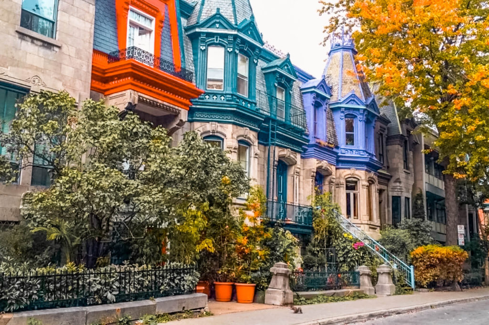

La ville de Montréal est bien connue pour son côté cosmopolite,
son street-art et l’engouement que les français expatriés ont pour
elle ! Au cours des quelques mois que j'ai passé à travailler là-bas,
j'ai expérimeté une ville dynamique, je
vous en donne mes coups de cœur.
Tout d’abord, je dois vous dire que j’ai vécu 3 mois à Montréal. Et je suis
tombée raide dingue de cette ville et de cette façon de vivre et de ses habitants.
Oui, car il ne faut pas se dire que Montréal, c’est "l’Europe en Amérique".
Ne vous attendez donc pas à voir une ville ressemblant à Paris, Lyon ou
Marseille. Venons-en au centre du sujet : Que visiter à Montréal ? Je vais
vous présenter une liste non exhaustive de ce qu’il faudrait voir lors de
votre voyage dans la ville Canadienne qui reçoit le plus de français par an.
Découvrez les lieux mytiques,
les plats typiques, et les festivals de Montréal pour vous satisfaire tout au
long de l'année.
MONTRÉAL
ITINERAIRE MONT-ROYAL ¤ VIEUX PORT ¤ SAINTE CATHERINE ¤ PLACE DES ARTS
Les lieux à ne pas manquer ↬
Saint Denis, Mont-Royal, Jacques-Cartier, Vieux-Port, Place d'Armes, Jean-Talon, Quartier Gay "le Village"...
La rue Saint-Denis
En digne française, impossible de ne pas sélectionner la célèbre rue Saint Denis dans mes coups de cœur à Montréal ! Je comprends l’engouement des français pour ce quartier, on peut y admirer des maisons typiques de Montréal. La rue Saint-Denis regorge de petits cafés et de bars à la devanture attirante. On y trouve aussi des magasins plus pointus et de nombreux tatoueurs.
le Plateau Mont-Royal
Ah, le Plateau Mont-Royal. Les français y sont très nombreux, vous ne
serez donc pas dépaysés de l’accent la-bas ! Ne vous demandez pas
pourquoi il y autant de français la-bas, c’est simplement parce qu’il
s’agit de quartiers vraiment atypiques, au style artiste, bohème. On
pourrait comparer ça à un petit Aix-en-Provence. Vous y trouverez votre
bonheur.
Le « Plateau » regorge de petits restaurants, bars et autres magasins
qui vous donneront envie d’y rester plus longtemps qu’une simple balade,
comme ces milliers de français qui y ont emménagés. N’oubliez pas de vous
rendre au Parc La Fontaine, un des plus grands parcs de Montréal qui aurait
été fait par la personne qui a créé Central Park, rien que ca. Et, bien sûr,
vous pourrez y faire du patinage l’hiver. Oui, vous l’avez compris, on ne fait
pas rien à Montréal l’hiver malgré les températures glaciales (-10, -20°!).
Pendant l’été? C’est l’occasion de prendre une bonne bouffée d’air frais!
La rue Saint-Denis et le Plateau
En digne française, impossible de ne pas sélectionner le célèbre quartier du Plateau dans mes coups de cœur à Montréal ! Je comprends l’engouement des français pour ce quartier, on peut y admirer des maisons typiques de Montréal. La rue Saint-Denis regorge de petits cafés et de bars à la devanture attirante. On y trouve aussi des magasins plus pointus et de nombreux tatoueurs.
La rue Saint-Denis et le Plateau
En digne française, impossible de ne pas sélectionner le célèbre quartier du Plateau dans mes coups de cœur à Montréal ! Je comprends l’engouement des français pour ce quartier, on peut y admirer des maisons typiques de Montréal. La rue Saint-Denis regorge de petits cafés et de bars à la devanture attirante. On y trouve aussi des magasins plus pointus et de nombreux tatoueurs.